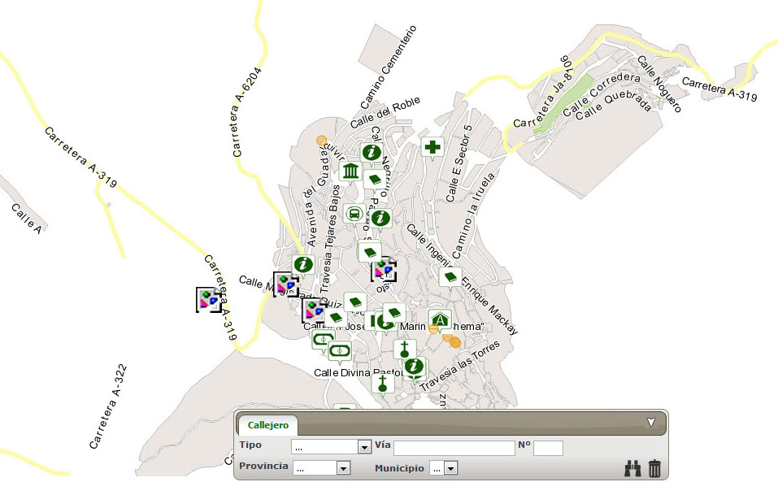

Lunes, 15 de Abril de 2013 11:19
Se puede ver en www.cazorla.es
El Aula de Cultura de la Diputación acogió la presentación del callejero digital unificado de Andalucía (CDAU), un proyecto en cuya elaboración la Administración provincial está colaborando con el Instituto de Estadística y Cartografía de Andalucía (ICA) y con el que se pretende aunar la información de los distintos callejeros disponibles de los municipios andaluces y crear uno solo que sea referencia para la planificación y la consulta de datos sobre calles, situación geográfica e instalaciones, entre otras cuestiones.
"Es un instrumento útil para todas las administraciones, valioso para el ciudadano y de promoción de nuestras empresas porque nos da una visión actualizada del ámbito urbanístico, económico y social de cada pueblo y ciudad", subrayó el presidente de la Diputación, Francisco Reyes, en la presentación junto al director del Instituto de Estadística y Cartografía (IECA), Ignacio Pozuelo, de este proyecto a alcaldes y técnicos municipales de una quincena de ayuntamientos jienenses con los que se trabaja actualmente para la recogida y actualización de datos que se integrarán en el CDAU.

En este acto, Francisco Reyes, quien también estuvo acompañado por el diputado de Infraestructuras Municipales, José Castro, y el delegado territorial de Economía, Innovación, Ciencia y Empleo, Manuel Gabriel Pérez, explicó que este callejero digital se realiza en el marco de un convenio entre la Diputación y el Instituto de Estadística y Cartografía de Andalucía, que depende de la Junta de Andalucía, firmado hace ahora un año y que ha dado como resultado un callejero que, según el presidente de la Corporación provincial, es una herramienta "muy práctica para ayuntamientos, empresas y ciudadanos".
Por ahora, en la provincia de Jaén se ha terminado el de Cazorla, y están a punto de concluirse los de Villacarrillo y Mancha Real, mientras que en otros doce municipios está en fase de elaboración y las previsiones son que para 2014 esté finalizado en todas las localidades jienenses. Su realización permitirá, según Reyes, que "los ayuntamientos mejoren la gestión municipal y se favorezca la coordinación con otras administraciones, se facilite la información de residentes y actividades y, por tanto, se contribuya a una mejor planificación de zonas urbanas y de la distribución de equipamientos públicos y recursos, además de que se aumentará la eficacia de la prestación de los servicios públicos, por ejemplo a la hora de optimizar rutas en servicios indispensables como los de emergencias, o para la gestión tributaria".
Pero los consistorios no son los únicos que se podrán beneficiar de esta precisa herramienta, donde las empresas pueden encontrar, como detalló el presidente de la Diputación, "un soporte para promocionar sus servicios, especialmente las de hostelería y comercio, porque este callejero será muy importante para los turistas que buscan un lugar a la hora de comer o dormir cuando visitan nuestra provincia". Igualmente, destacó su utilidad para las empresas dedicadas a la logística o el transporte y que también "abre nuevas vías de generación de productos y servicios". Por último, la ciudadanía en general "tendrá acceso a una información más actualizada, ya que se ofrecerán más posibilidad de localizar cualquier lugar o trazar rutas", concluyó Reyes.